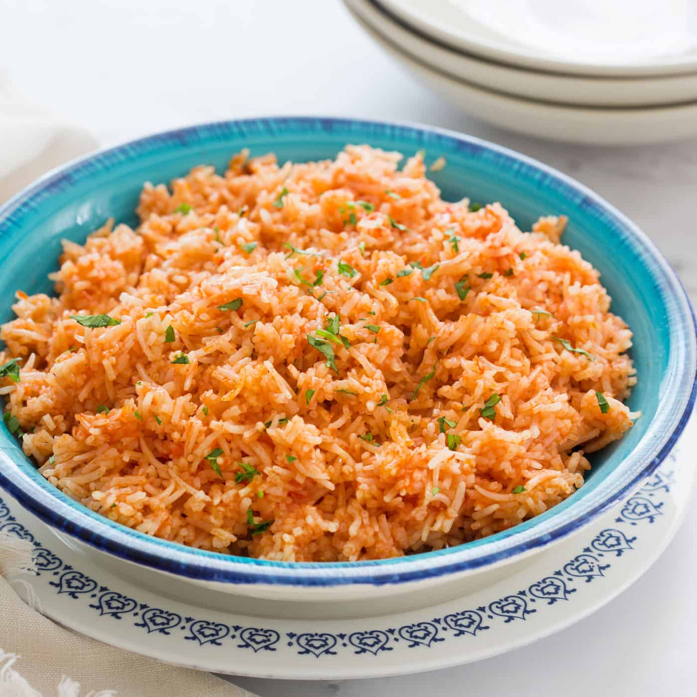

Home
Recipe for Red Rice

About this recipe
Red Rice is a dish of rice cooked with tomato, among other secondary ingredients.
This recipe is based on the Mexican style red rice dish, though it is a variation of it.
Original Mexican recipes often include hot pepper and Pico de Gallo, which this one does not.
If you like rice and tomato, you will probably enjoy this recipe.
Ingredients
These are the ingredients you will need to prepare this recipe:
- Pre-Cooked, white long rice. Note: You may use other kinds of rice, but they must be pre-cooked.
- Drinkable water.
- Olive Oil.
- Salt.
- Onion Powder.
- Garlic Powder.
- Turmeric Powder.
- Tomato Sauce.
Recipe Steps
How to prepare the recipe:
- Pour 2 cups of water in a pot.
- Turn the stove on very low heat to start warming the water.
- Add 3 spoons of olive oil to the water in the pot.
- Add 1 tea spoon of salt.
- Add 1/2 tea spoon of onion powder.
- Add 1/3 tea spoon of garlic powder.
- Add 1/4 tea spoon of turmeric powder. Note: Optional, add this to get health benefits of turmeric.
- Stir a little bit to mix the oil, salt, and powders.
- Add 1/2 cup of tomato sauce. Note: Can be home-made or from a can/carton.
- Stir plenty to mix the sauce with the water and salts.
- Raise the stove to mid-high heat.
- Wait for it to start boiling, stir occasionally.
- When it starts to boil, turn off the stove, and add 2 cups of white pre-cooked rice.
- Cover pot with lid and wait 20 minutes or so for the rice to absorb the water/sauce.